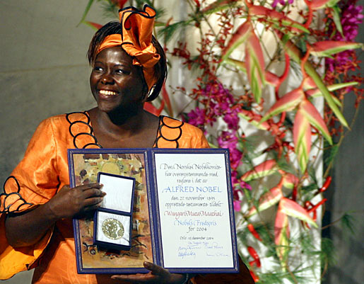

Wangarĩ Maathai

First African woman to win the Nobel Peace Prize for her contribution to sustainable development, democracy and peace.
Here are a few of Ms. Maathai's achievements:
- 1977 - 2002 - Founder and Co-ordinator of The Green Belt Movement
- 2002 - 2011 - Chair of the Board, The Green Belt Movement
- 2009 - 2011 - UN Messenger of Peace
- 2003 - 2005 - Assistant Minister, Environment, Republic of Kenya
- 2002 - 2007 - Member of Parliament, Tetu Constituency, Republic of Kenya
- 1973 - 1980 - Director, Kenya Red Cross